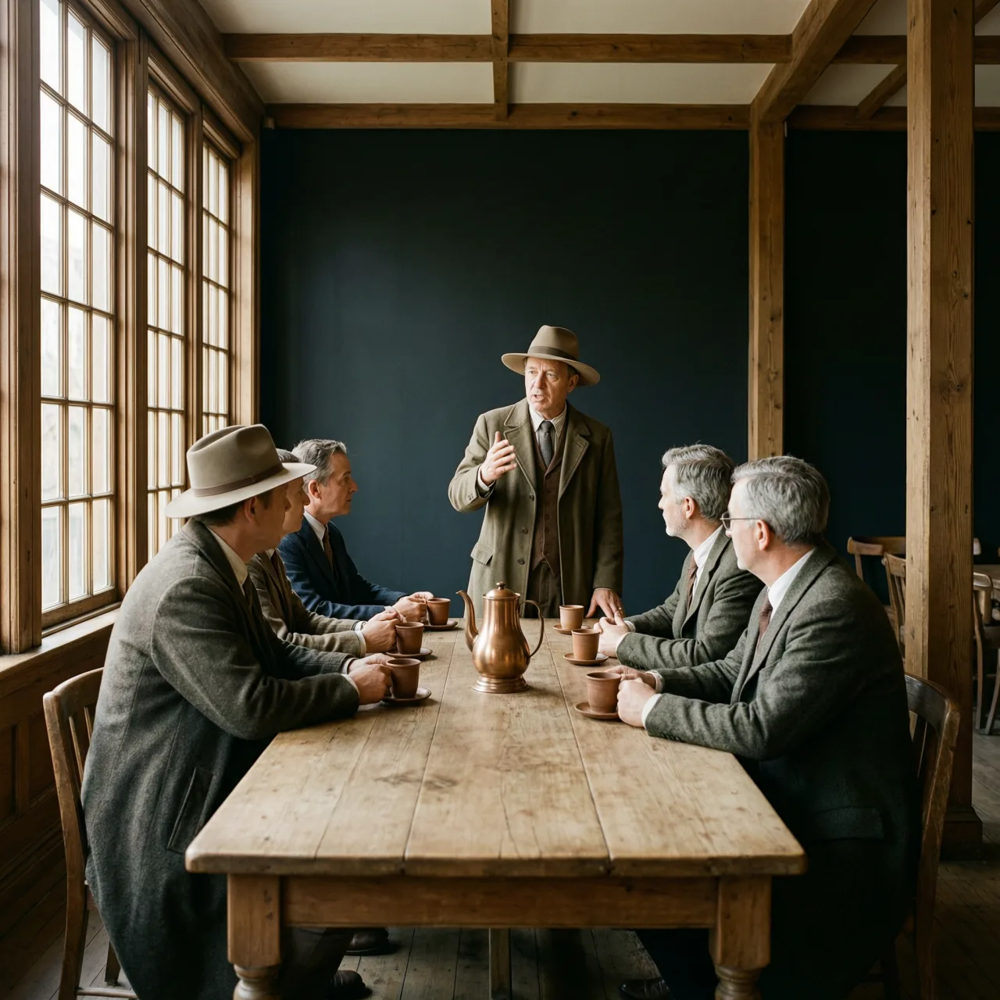

劳合社和伦敦证券交易所，都长在17世纪咖啡馆的常客圈上

17世纪伦敦人对咖啡馆的戏称：花一便士买杯咖啡坐一整天，新闻、辩论和生意经都像课程一样廉价开放。
1692年，伦敦格雷斯彻奇街一家咖啡馆的店主爱德华·劳埃德不会想到，他店里那张被船主和承保人围住的桌子，日后会长成全球最老牌的海上保险市场。几条街外的乔纳森咖啡馆上演了同样的故事：今天的伦敦证券交易所，就是从它的常客圈里走出来的。
咖啡在17世纪中叶抵达英国，1652年后伦敦的咖啡馆越开越多。花一便士买杯咖啡，就能坐上一整天：听各地消息、找交易对手、跟陌生人辩论，时人管这种地方叫「便士大学」。店铺很快按行当和阵营细分——船主和承保人聚在河边一带，经纪人们守在皇家交易所附近，文人有文人的店，科学家有科学家的店。互不相识的人在同一张长桌上坐下，生意就开始了。
交易所为什么长在咖啡馆而不是写字楼里？因为海上保险和股票买卖靠的全是实时消息：哪条船平安进港、哪家公司的账目出了问题。在没有电报的时代，伦敦只有咖啡馆能让这类消息持续不断地流动。一屋子常客还提供了互相监督：谁赖了账、谁吹了货，当场人人知晓，声誉本身就是契约。1697年一项整治投机欺诈的法令把未注册的股票经纪人赶出皇家交易所，他们索性把交易搬去了隔壁钱斯巷的咖啡馆。
爱德华·劳埃德1713年去世，店铺几度易主，承保人的常客圈却没散：18世纪70年代他们立约集资、雇人打理事务，随后迁入皇家交易所，并干脆用店主的姓给整个市场命名——Lloyd's，劳合社。乔纳森咖啡馆里的经纪人群体也在1773年正式结成协会，1801年搬进卡佩尔街的交易大厅，成为伦敦证券交易所。两家机构如今都不卖咖啡，而劳合社顶上的名字，仍属于一个没做过一单保险的开店人。